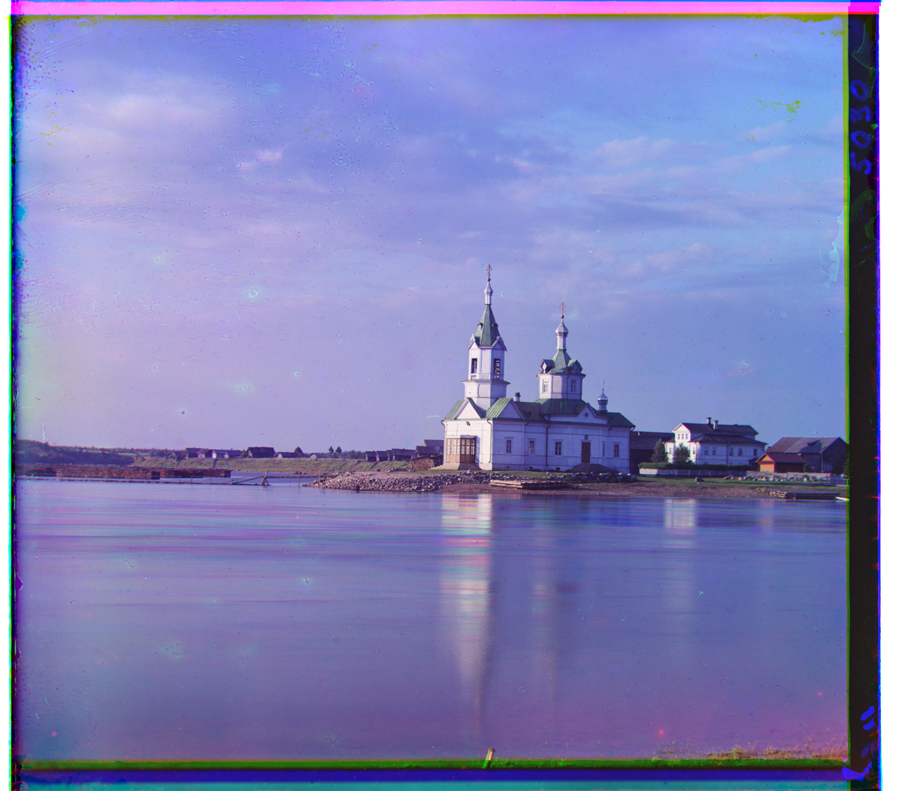
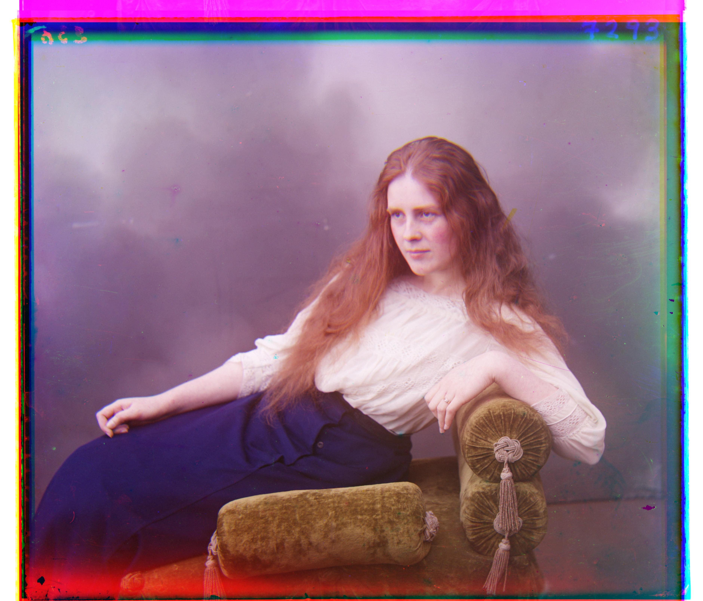
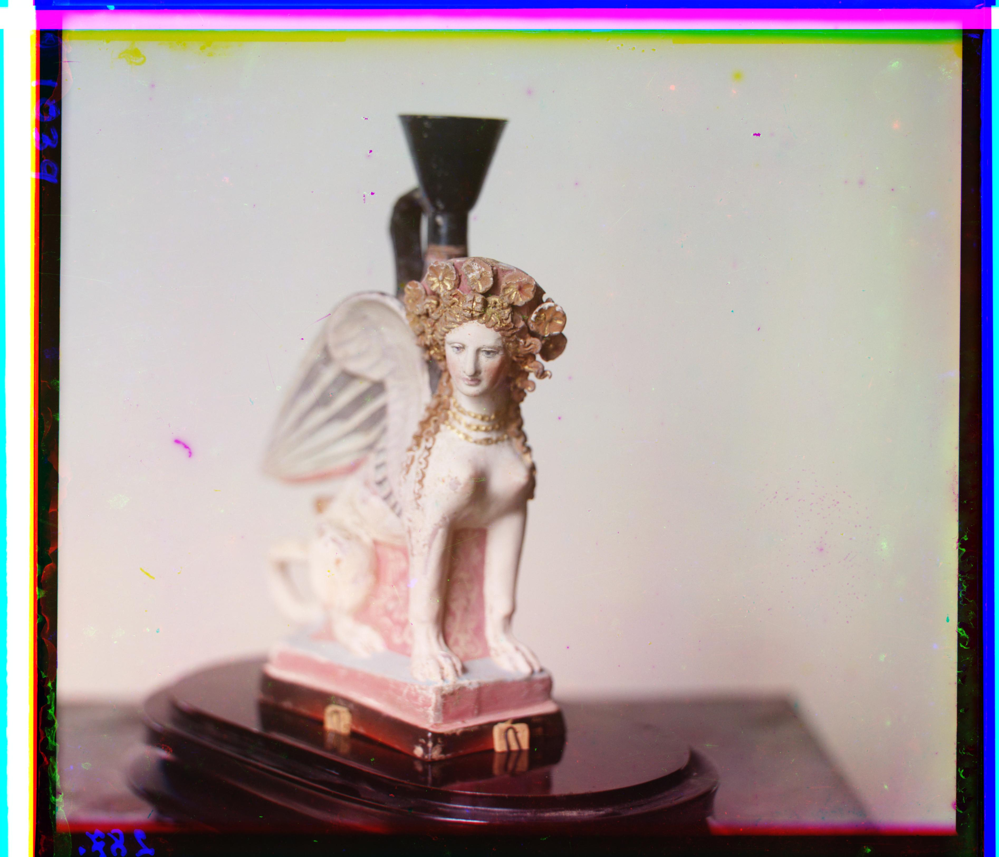

At the beginning of the 20th century, Russian photographer Sergei Mikhailovich Prokudin-Gorskii was convinced that the future of photography was color. He took thousands of color pictures by taking three photos, one with a red filter, one with a green filter, and one with a blue filter. This project combines these three negatives into the picture as Gorskii saw it, aligning the channels to create a single composite image.
First, I separate the single image into the three sub-images, blue, green, and red, by dividing the image into three even parts. Then, align the green and red channels to the blue by convolving over each image with a vertical and a horizontal edge detector kernel. This kernel is constructed to be similar to a kernel that was convolved with a gaussian lowpass filter, so that only the important edges are discovered. These convolved images are added together to store information about both vertical and horizontal edges. Finally, the algorithm loops through a grid search space, trying each possible shift in the grid, and selecting the shift which minimizes the euclidean distance between the two convolved colors. Note that I only take the euclidean distance of the images within a certain border.
For tif images, I use the same approach as above, but with a recursive pyramid setup. First, the algorithm finds the best offset for a small scale version of the image, then progressively refines its estimate.
The primary bell and whistle I implemented was to apply this convolutional edge detector before I took the euclidean distance of two images. I implemented this after having difficulty aligning the Emir image. Here is an example of the difference between not applying this convolution, and applying this convolution.
Before: No Convolution (Just Euclidean)G Offset: [5, 2] R Offset: [12, 3]

G Offset: [25, 4] R Offset: [58, -4]
G Offset: [49, 24] R Offset: [107, 41]
G Offset: [60, 18] R Offset: [124, 14]
G Offset: [41, 17] R Offset: [90, 23]
G Offset: [56, 9] R Offset: [119, 13]
G Offset: [80, 10] R Offset: [177, 13]

G Offset: [-3, 2] R Offset: [3, 2]

G Offset: [51, 27] R Offset: [107, 35]
G Offset: [33, -10] R Offset: [140, -26]
G Offset: [79, 30] R Offset: [176, 37]

G Offset: [53, 12] R Offset: [111, 8]
G Offset: [3, 3] R Offset: [6, 3]

G Offset: [42, 2] R Offset: [85, 29]

G Offset: [47, 19] R Offset: [109, 35]
G Offset: [53, 27] R Offset: [126, 19]
G Offset: [21, 27] R Offset: [110, 53]
